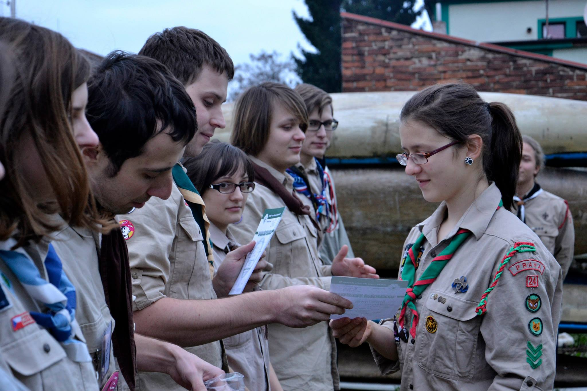

Účastníci
Koho na Ventu potkáš?
Pavel Kwaki Šenkyřík
180. oddíl Veneta
Jmenuji se Pavel je mi 20 let a vedu chlapecký 180. oddíl Veneta. Do skauta chodím 10 let a skauting se pro mě stal součástí mého života. Mezi mé ostatní zájmy patří sledování seriálů, hraní a dokonce i nějaká ta práce na počítači, čtení knih a nějaký ten rekreační sportík. Letos začnu studovat Přírodovědeckou fakultu UK.{kind=link}
Michal Jumper Osmanov
145. oddíl Naděje
"Nic není nemožné, stačí mít naději!" Nazdar! O skauting jsem se se zajímal nevědomky od dětství, ale oficiálně jsem vstoupil do organizace cca v roce 1994 v pražském středisku 5. květen Radotín, kde jsem si prošel cestu od vlčete k ""vedoucímu"" skautského oddílu. Po osmileté pauze jsem se před 2 lety vrátil do služby a to vstupem do střediska 34. Ostříž Praha, kde do současnosti působím jako zástupce vedoucího 145. oddílu skautů Naděje. Jsem spíše technik, ale v posledních 10 letech se věnuji obchodu a v současné době jsem obchodní zástupce na specializovaný software pro výrobní firmy, konkrétně se věnuji oblasti automotive, takže se svými klienty zlepšujeme například emise u aut, prodlužujeme životnost jednotlivých dílů a vyvíjíme elektromobily. V osobním volnu (a je ho při oddíle poměrně málo :-) ) se snažím věnovat tvorbě videí, sportu (vše kromě plavání), vaření a nejraději mám českou krajinu.{kind=link}
Lucie Šmoula Schwarzová
120. oddíl Miriklo
"Mým domovským střediskem je od mých 5 let 52. středisko Stopaři z Prahy 8, pod které také spadá oddíl skautek Miriklo, který vedu čtvrtým rokem. Momentálně studuji prvním rokem obor Ekonomie a finance na IES FSV UK. Celý rok se většinou těším na tábor a hlavně na přípravu CTH. Hraju na klavír, mám ráda tanec, Haribo medvídky a ráda chodím na puťáky. Baví mě péct dorty a sledovat aktuální sportovní akce.{kind=link}
Martina Svobodová
5. oddíl Pomněnky
Ahoj! Jsem vedoucí 5. oddílu skautek Pomněnek. Do skauta jsem nastoupila poměrně pozdě, v roce 2012, takže už teď jsem vedoucí déle, než jsem kdy byla ""jen"" skautkou. :D V civilním životě mě můžete od letoška potkat na fyzioterapii na ČVUT nebo třeba v nemocnici, kde dělám dobrovolníka. Věřím, že na Ventu získám nejenom dovednosti k vedení oddílu ale i nové kamarády! :){kind=link}
Gabriela Borovcová
29. oddíl Berušky
Do skauta chodím už nějaký ten pátek. Nejdříve jsem vedla světlušky, a když dorostly do skautského věku, tak jsem se holek nechtěla vzdát a rozhodla jsem se je vést dál a proto momentálně vedu skautky. Jinak jsem studentkou Karlovy Univerzity (nevím jak ještě dlouho :-D) a pocházím z Prahy. Dost překvěpivě mezi moje záliby patří skauting. Ale kromě toho taky ráda sportuju, střílím nebo jen tak lenoším.{kind=link}
Karolína Kája Brabcová
24. oddíl skautek
Narodila jsem se do skautské rodiny a tak bylo nejspíš i mým osudem, že jednou budu do skauta chodit i já. Oficiálně chodím již dvanáctým rokem, devátým rokem do současného střediska. Letos začínám vést dívčí oddíl skautek. Mám ráda sport (všech druhů), dobré (a zdravé) jídlo, zábavu, přátele a rodinu. Jsem moderní člověk, co se neobejde bez mobilu a ostatních vychytávek, ale na druhou stranu ráda vypadnu někam do přírody a vychutnávám si její krásu a klid.{kind=link}
Jitka Vondrášková
49. oddíl Lumturo
Jmenuji se Jitka a studuji Sociální pedagogiku v Praze. Pocházím od Příbrami, žiji v Praze. Pracuji v nízkoprahovém klubu YMCA. Věnuji se skautingu přes 13 let, vedu 5.rokem skautky. Baví mě hraní na kytaru, dobrá hudba k poslechu a k tancování, kulturní zážitky všeho druhu, psaní básniček atd.{kind=link}
Jan Citrón Holeček
Medvíďata
Ahoj, jmenuji se Jan Holeček a přezdívku mám Citrón, do skauta chodím už od svých 6-ti let. Jsem z oddílu Araneus na Praze 7. Momentálně vedu mladší vlčata. Po maturitě bych chtěl jít studovat psychologii. Mám rád sci-fi a elektronickou hudbu.{kind=link}
Tomáš Kubín
1. Skautský oddíl Tvarožná
Použiju citát z jednoho hezkého českého filmu „Když je někdo jedinej, kdo to může udělat, tak musí."{kind=link}
Barbora Klíště Žentelová
roveři, středisko Kruh
Vedu už třetím rokem vlčata, je to docela sranda, protože to mělo být spíš dočasné řešení. Všichni mi říkají spís Barčo než Klíště, což mi vůbec nevadí. Ráda tancuju a taky horolezim a pak spoustu dalších věcí. Jsem zvědavá co nás čeká a jestli potkám nějaký suprácký nový rovery!{kind=link}
Jan Blešák Blecha
Bílí vlci (odd. č. 3 - vlčat)
Skauting málo bere a hodně dává, a proto ho mám rád :-) V Novém Strašecí, kde jsem skautem, jsem vystudoval gymnázium a potom VŠE v Praze. Teď většinu času trávím v kanceláři nebo na jednáních; celý den s počítačem a telefonem po ruce. Rád čtu, ve volných chvílích se také věnuji folkloru, poznávám nové lidi a občas si zkusím i nějakou výzvu. Z barev mám nejraději modrou, z hudby všechno možné a na táboře jsem si rád zkusím něco postavit, uvařit i připravit program pro družinu či oddíl. Zbožňuji oheň, jeho přípravu, opracovávání a štípání dřeva. Píšu to rychle a od srdce, tak jenom doufám, že to trochu dává smysl. Odpovědnost za případné gramatické chyby přenechám MŠMT. Blešák{kind=link}